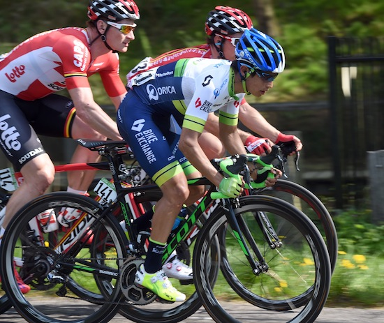
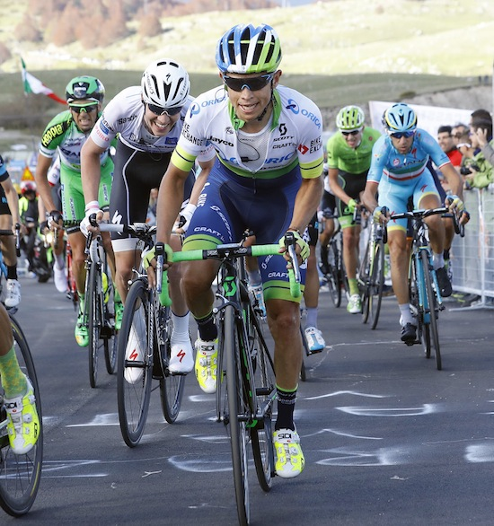
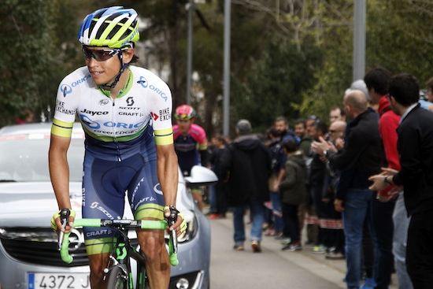

CHAVES muestra una buena FORMA EN CUARTA ETAPA DEL GIRO DE ITALIA

El Colombiano Esteban Chavez del Orica GreenEDGE hizo la selección final de la cuarta etapa del giro de Itala para terminar entre los otros favoritos de la carrera...
Chaves acelera para colocar la séptima posición final en alto del Giro de Italia

El Colombiano Esteban Chavez del Orica GreenEDGE rompió a sus rivales en el último kilómetro de la sexta etapa del Giro de Italia, terminando séptimo en la jornada y pasando a la octava posición de la general...
Orica GreenEDGE mirando hacia adelante a la edición número 99 del Giro de Italia

Orica GreenEDGE entrará esta semana al Giro de Italia con un equipo bien equilibrado para apoyar al colombiano Esteban Chaves con el objetivo de pelear resultado en la clasificación general...